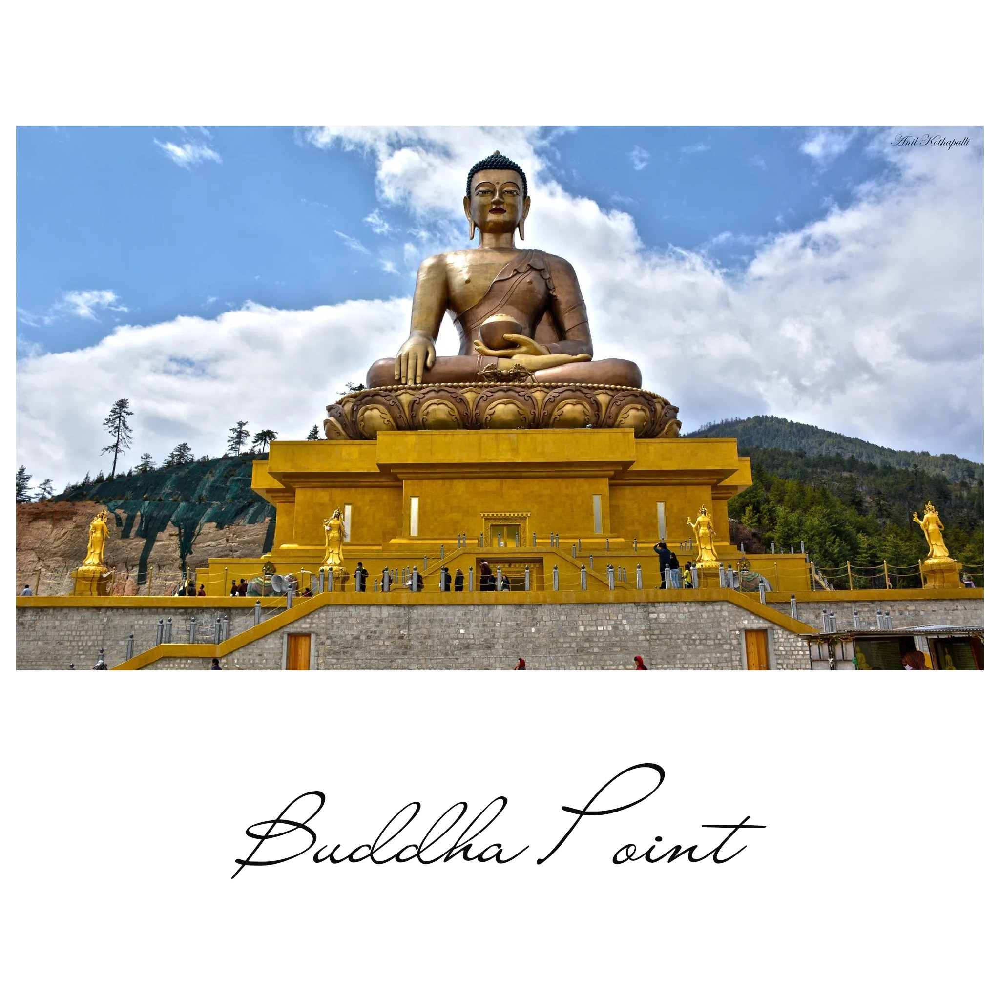

FootPrint
Gangtok, Sikkim
My family makes sure to visit gangtok atleast once a year to get blessing from our root guru HH Dodrupchen Rinpoche. Rinpoche is also known as living Buddha and many Bhutanese people likes to seek blessing from Rinpoche.
Gangtok, Sikkim
Hunderds of people gather here to get blessing from rinpoche. This place is very peaceful. Thousands of disciples of rinpoche has permanent residence around these temple and also thousands of monks practise buddhist study.
Gangtok, Sikkim
Gangtok, Sikkim
These flyover town is famous in sikkim. People from all over the countries likes to visit this place. Many of them visits only to take beautiful pictures. There are lots of resturants and shopping Mall.
Gangtok, Sikkim
When in Gangtok, it is must to try cable car. It was a good experience for me to travle in cable car. The bird view from the car was breathtaking. We can see clustered population of sikkim.
Thimphu, Bhutan
Buddha Point is such a nice place to visit because we can feel the fresh air with the view of Thimphu city. We can feel the clear blue sky very near to us and I feel relieved.
Thimphu, Bhutan
I go to Dechenphu Lhakhang to seek bleesing from local deity of Dechenphu to keep myself away from bad deeds.
Lhuntse, Bhutan
The Guru statue at Takila is surrounded by eight big and 108 small stupas. Their are monks who stays there to study buddhist teachings. Everyday old age people comes to offer prayers and butterlamps. These place is also going to serve as home for old age people.